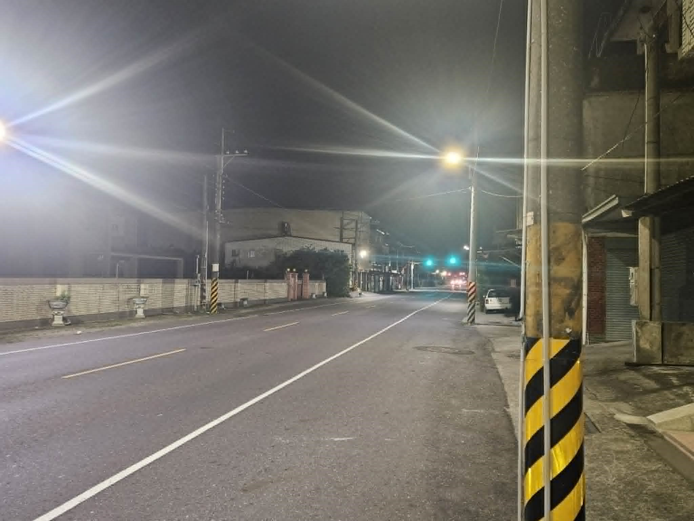

04 · TRANSPORT
交通
旗山
公路為主 · 無鐵路

旗山客運總站 — 攝/Tbkcg

縣道184號 — 連接旗山與美濃山區
| 鐵路 | 無鐵路服務 |
| 高速公路 | 國道10號 |
| 省道・縣道 | 台3線、台29線 |
| 公路客運 | 旗山轉運站 |
| 對外距離 | 至高雄市區約 35 分鐘車程 |
斗南
鐵路 · 縱貫要道
| 鐵路 | 斗南車站、石龜車站 |
| 公路 | 國道1號、台78快速道路 |
| 省道 | 台1線縱貫公路（穿越鎮區） |
| 公路客運 | 臺西客運 |
| 對外距離 | 至嘉義市約30分鐘 ／ 台中約60分鐘 |